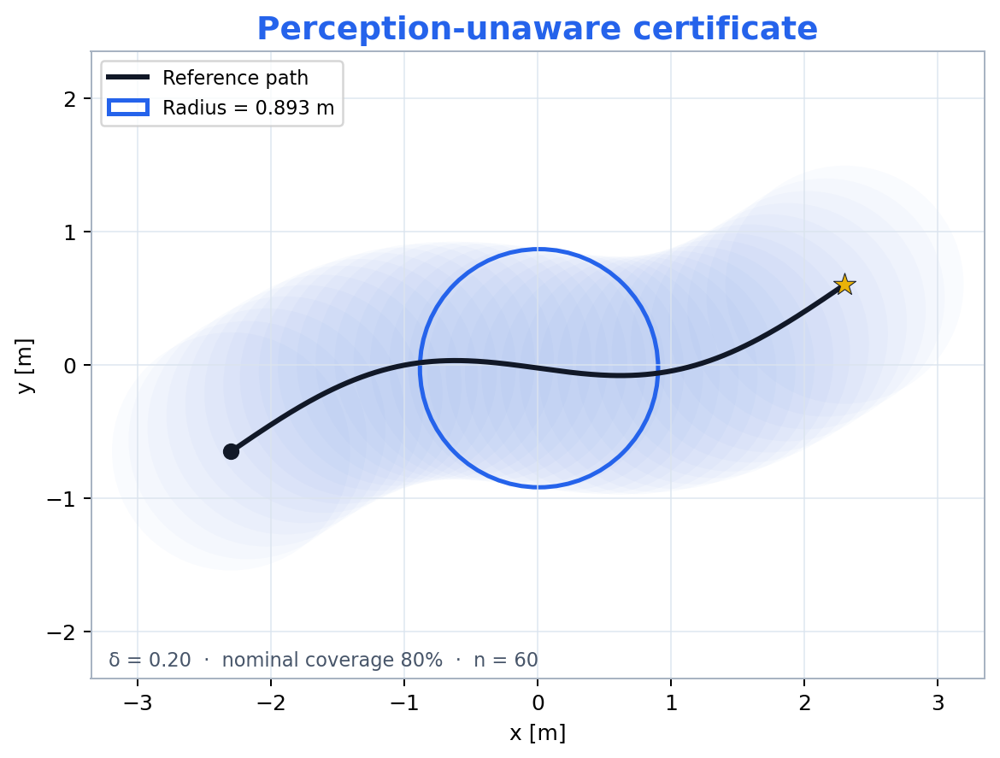
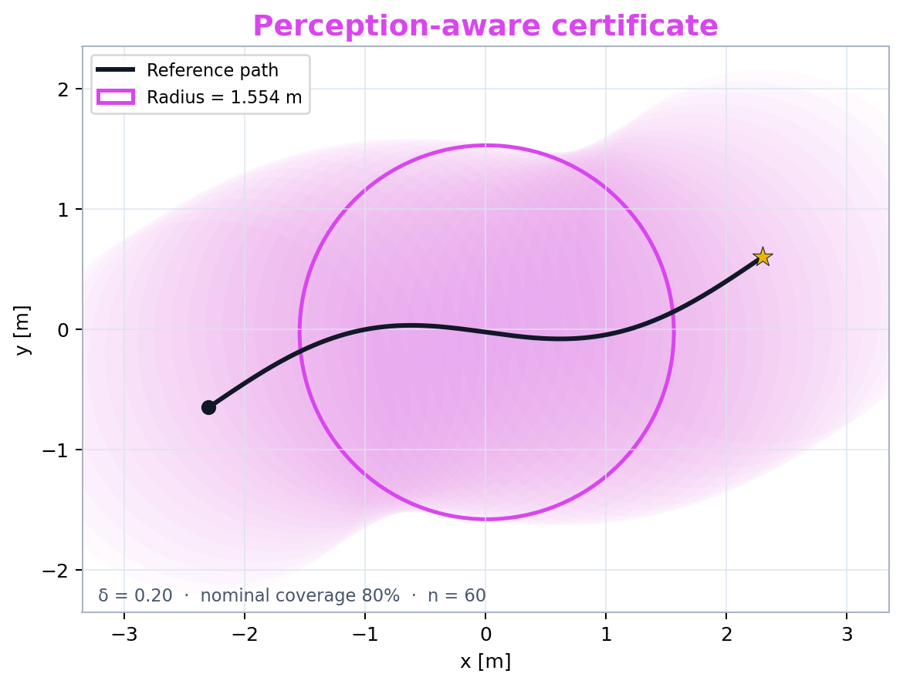

Perception Uncertainty-Aware Tube
Calibration compares a transformer plan built from the perceived environment with an oracle built from the Vicon-ground-truth environment , absorbing the combined planner and perception mismatch without a sensor-error model.

Hardware framework: perception, language-conditioned planning, transformer imitation, ideal double-integrator tracking, and split-conformal tube calibration.
Hardware problem formulation
is the Vicon-ground-truth environment and the onboard perceived environment. specifies the goal, for example “fly to the person,” and specifies the route preference, for example “give the person extra space.”
The offline oracle uses ; the onboard transformer uses . The resulting difference includes planning and perception uncertainty.
Hardware controller
With ,
makes contracting. The matrix satisfies .
Hardware score and safety tube
The score is the largest weighted closed-loop residual. With conformal quantile ,
with probability at least . This is the final probabilistically robust conformal contraction tube between the transformer-driven trajectory and the offline oracle.
Hardware dynamics and tracking assumption
Because the hardware data do not include a separate trajectory rollout for the oracle, the analysis assumes the fast cascaded PID loops in PX4 ideally track the transformer’s dynamically feasible double-integrator reference. Under this assumption, the calibrated residual captures the transformer and perception mismatch relative to the offline oracle.


Epoch-53 person-only HRRT hardware transformer · · nominal 80% coverage · calibration samples. These diagnostic certificates provide the calibrated radii; whole-flight empirical coverage will be added after the fixed five-flight evaluation is complete.